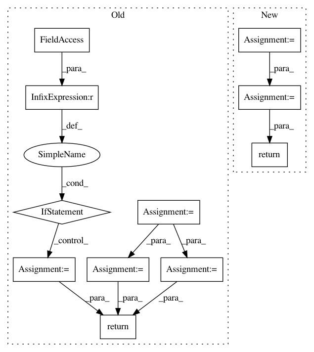

0df03347b9e26ef6153d1a1bed49991b51b09a9d,snips_nlu/pipeline/configs/intent_classifier.py,FeaturizerConfig,get_required_resources,#FeaturizerConfig#,207
Before Change
def get_required_resources(self):
if self.use_stemming:
parser_usage = CustomEntityParserUsage.WITH_STEMS
else:
parser_usage = CustomEntityParserUsage.WITHOUT_STEMS
if self.word_clusters_name is not None:
word_clusters = {self.word_clusters_name}
else:
word_clusters = set()
return {
WORD_CLUSTERS: word_clusters,
STEMS: self.use_stemming,
CUSTOM_ENTITY_PARSER_USAGE: parser_usage
}
def to_dict(self):
return {
"unit_name": self.unit_name,
After Change
return Featurizer.unit_name
def get_required_resources(self):
required_resources = self.tfidf_vectorizer_config \
.get_required_resources()
if self.cooccurrence_vectorizer_config:
required_resources = merge_required_resources(
required_resources,
self.cooccurrence_vectorizer_config.get_required_resources())
return required_resources
def to_dict(self):
return {
"unit_name": self.unit_name,
In pattern: SUPERPATTERN
Frequency: 5
Non-data size: 11
Instances
Project Name: snipsco/snips-nlu
Commit Name: 0df03347b9e26ef6153d1a1bed49991b51b09a9d
Time: 2019-01-16
Author: clement.doumouro@gmail.com
File Name: snips_nlu/pipeline/configs/intent_classifier.py
Class Name: FeaturizerConfig
Method Name: get_required_resources
Project Name: pymc-devs/pymc3
Commit Name: 0b169fcf6e089ad7e6c9a8faf3aaf69de28ebef5
Time: 2017-07-11
Author: aseyboldt@users.noreply.github.com
File Name: pymc3/distributions/multivariate.py
Class Name: MvNormal
Method Name: logp
Project Name: arraiy/torchgeometry
Commit Name: b77efb1269d87560bc9f9e6016bcf77c53557448
Time: 2020-01-07
Author: diegovd0296@gmail.com
File Name: examples/data_augmentation.py
Class Name: DummyDataset
Method Name: __getitem__
Project Name: scikit-learn-contrib/categorical-encoding
Commit Name: 374ca541aaf62aba88a144acbbc7398ca3e995ef
Time: 2018-11-26
Author: jcastaldo08@gmail.com
File Name: category_encoders/one_hot.py
Class Name: OneHotEncoder
Method Name: get_dummies
Project Name: eriklindernoren/PyTorch-GAN
Commit Name: 8f420a3b35944dcfa470dee958ef61dee221ce02
Time: 2018-04-23
Author: eriklindernoren@gmail.com
File Name: implementations/dualgan/datasets.py
Class Name: MNISTM
Method Name: __getitem__